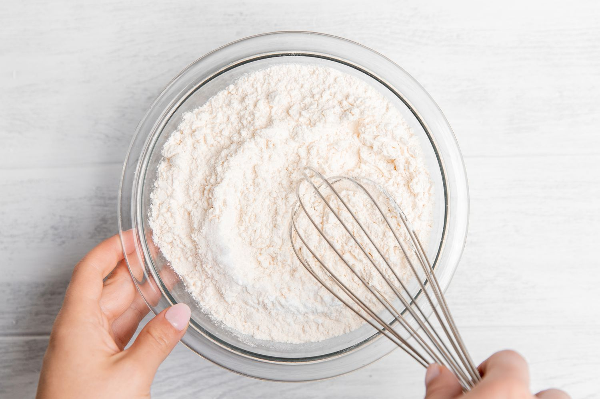
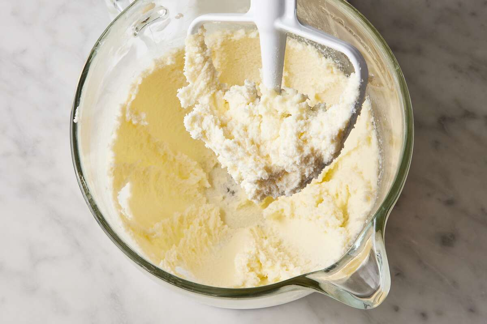
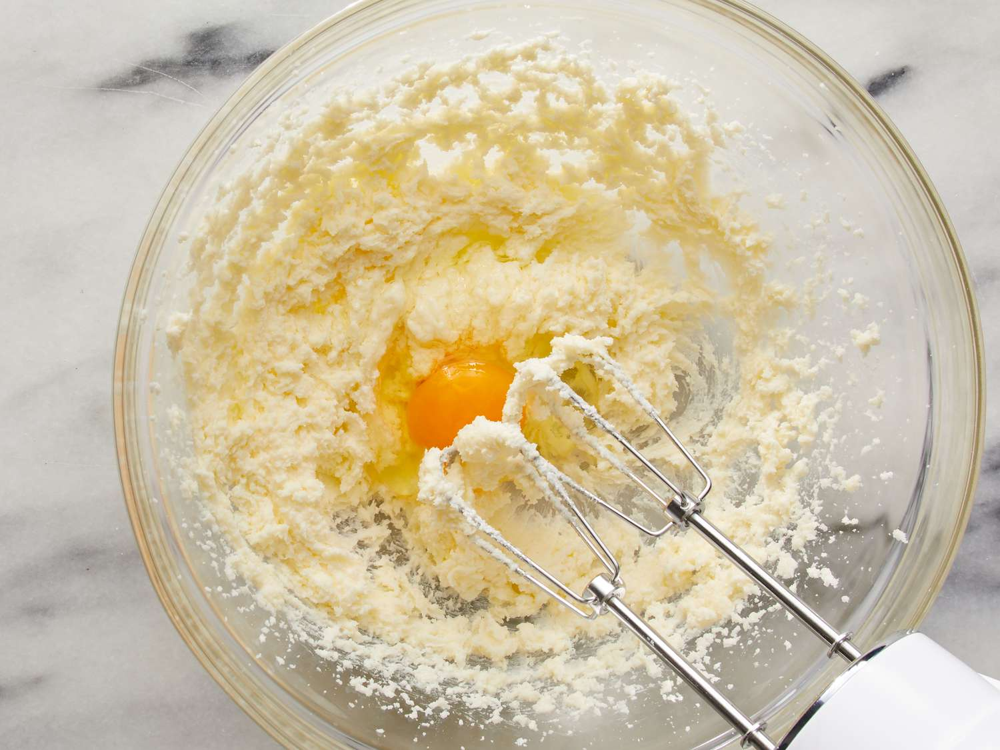
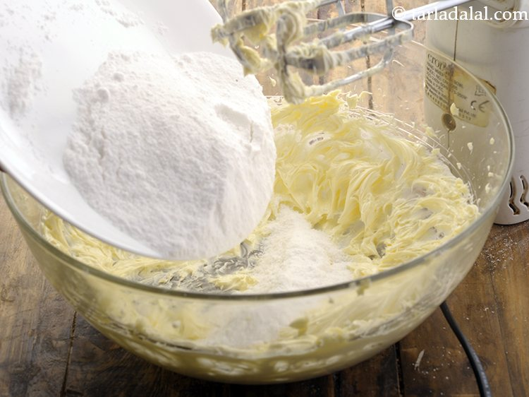
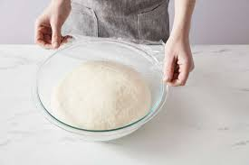
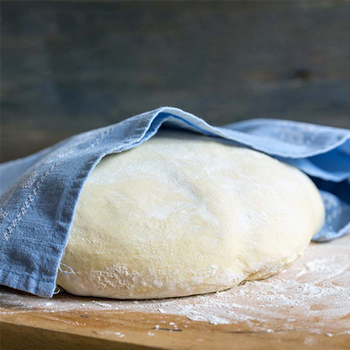
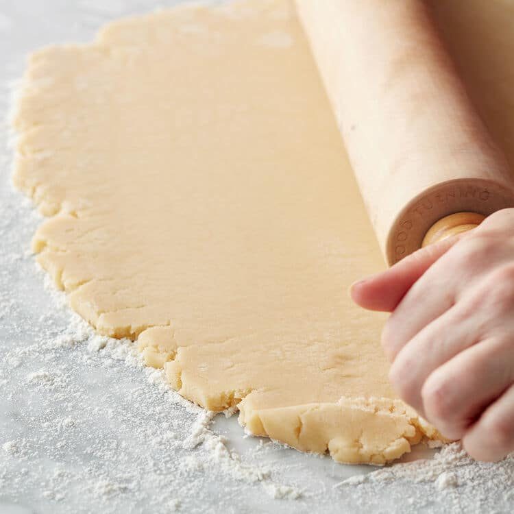
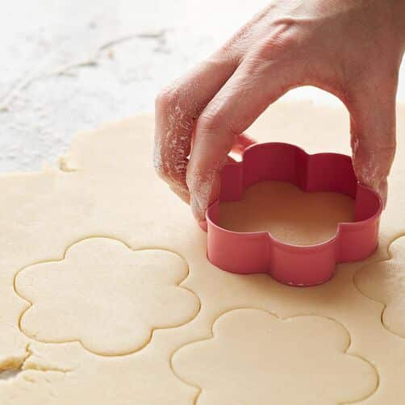
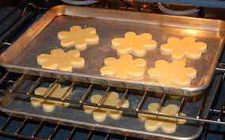

Delicious Sugar Cookie Recipe
ingredient
sugar
butter(unsalted)
flour
egg
others(vanila)
Directions
-In a medium bowl, mix together flour, salt, and baking powder.

-In the bowl of stand mixer or a large bowl with a hand mixer, add the butter and sugar. Beat on medium speed for 3 to 4 minutes or until fluffy.

-Add the egg and vanilla and mix until smooth.

Gradually add the flour mixture with the mixer on low. Continue adding until all of the flour is and let mix until the dough holds together, up to 5 minutes. If the dough is powdery or not holding together, mix it longer.

Divide the dough in half, and form each half into a flat 5-inch disk. Wrap the dough in plastic wrap and chill in the fridge for 2 hours or up to 4 days.

Preheat oven to 375°F. While the oven is preheating, remove the dough from the fridge. If it has been in the fridge longer than 3 hours, it may need to sit out 15 minutes before rolling as the butter will be very firm.

Sprinkle the work surface with a light dusting of flour (or powdered sugar) to keep the dough from sticking. Use a rolling pin to roll the dough to ¼-inch thickness.

Cut out shapes with cookie cutters. The scraps and be re-rolled, chill them in the fridge if they soften too much.

Place the sugar cookies 1-inch apart on an ungreased cookie sheet and bake for 8-10 minutes or just until cookies begin to brown on the edges.

Cool for 2 minutes on the cookie sheet, transfer to a cooling rack, and cool completely before decorating.
Once cooled, decorate with sugar cookie icing.
Your delicious sugar cookie is finished!
other desert recipies